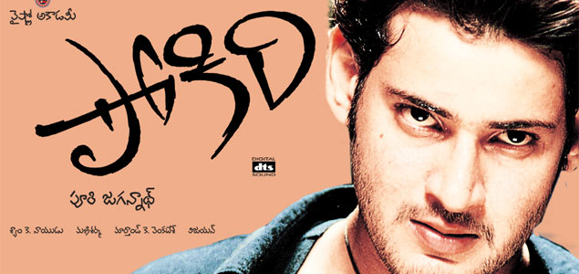

Ghattamaneni Mahesh Babu was born on 9 August 1975 in a Telugu family to actor Krishna and Indira in Madras, Tamil Nadu, India. He is the fourth of five siblings, after Ramesh Babu, Padmavathi, and Manjula and before Priyadarshini. His family hails from Burripalem in Guntur district, Andhra Pradesh.Mahesh spent his childhood mostly in Madras under the care of his maternal grandmother Durgamma and the rest of his family.
He was educated at St. Bede's Anglo Indian Higher Secondary School, Chennai. He obtained a bachelor's degree in commerce from the Loyola College, Chennai.
At the age of four, Babu visited the sets of the Telugu film Needa (1979) where its director Dasari Narayana Rao shot a few sequences of his as a part of the narrative in the presence of the former's brother Ramesh. Needa marked his debut as a child actor.In 1983, he acted in Poratam (1983) upon being requested by its director Kodi Ramakrishna.He went on to act as a child artist in the films Sankharavam (1987), Bazaar Rowdy (1988), Mugguru Kodukulu (1988) and Gudachari 117 (1989). He played a dual role in the film Koduku Diddina Kapuram (1989). Babu then appeared in Bala Chandrudu (1990), and Anna Thammudu (1990).
In 1999, Babu made his debut as a lead actor with the romantic comedy Rajakumarudu, and people began referring to him with the title Prince. For his performance, he received the Nandi Award for Best Male Debut.He starred in two films the following year Yuvaraju and Vamsi. He also starred in Krishna Vamsi's Murari (2001) which he regarded as an important film in his career and the role he played in it one of his favourites. For his role in Murari, he earned a Nandi Special Jury Award, in addition to his first nomination for the Filmfare Award for Best ActorTelugu.
In 2002, his performance in Takkari Donga landed him his second Nandi Special Jury Award. He had two film releases in 2003, the first one being Gunasekhar's Okkadu co-starring Bhumika Chawla. He won his first Filmfare Award for Best Actor Telugu for his performance in the film.The other release was Nijam co-starring Rakshita.Babu received praise from critics for his performance in the film, with Vijayalaxmi of Rediff.com calling him the only reason to watch the film's second half which she termed "a routine tale of vendetta". He won his first Nandi Award for Best Actor for his performance in the film, in addition to his third nomination for the Filmfare Award for Best Actor Telugu.
He then collaborated with Puri Jagannadh in 2006 for the film Pokiri, which was jointl produced by Jagannadh and Manjula. He received high praise for his performance, with Y. Sunita Chowdary of The Hindu opining that "Mahesh's understated performance in Pokiri allows him effortlessly to reclaim the title of a star, overshadowing his questionable career choices of late".He won his second Filmfare Award for Best Actor Telugu for his performance in the film.That same year, his next film, Sainikudu, was released.A critic from Rediff.com wrote that "Nonetheless, Sainikudu can be watched at least for its premise of letting the warrior in each individual surface, and the fact that it is done with the idea of motivating people to do something for their fellow humans".
In 2024, Babu reunited with Trivikram Srinivas for their third collaboration in the film Guntur Kaaram.The movie received a mixed response from critics as well as the audience while Mahesh stole the show in the action drama.
Mahesh Babu is an Indian actor, producer, media personality, and philanthropist who works mainly in Telugu cinema. He has established as one of the popular celebrities in India and also one of the highest paid actors in India. Babu has appeared in more than 25 films, and won several accolades including nine Nandi Awards, five Filmfare South Awards, four SIIMA awards, three CineMAA Awards, and one IIFA Utsavam Award.He has featured in Forbes India's Celebrity 100 list since 2012.
Babu won his first award (Nandi Award for Best Male Debut) in 2000 for his performance in Raja Kumarudu, and has gone on to win the most Nandi Awards out of any individual. His performance in films such as Okkadu, Dookudu and Srimanthudu fetched him further more awards including two CineMAA Awards, three Filmfare South Awards, two Nandi Awards and one Santosham Film Award. Babu has the second highest wins in the category Filmfare Award for Best Actor Telugu, next to Chiranjeevi.
Mahesh Babu established, "Mahesh Babu Foundation", to improve the lives of underprivileged children and communities. The foundation primarily focuses on supporting children in need by funding life-saving congenital heart surgeries. The foundation also co-runs the charitable trust and non-profit organisation "Heal A Child" in collaboration with Andhra Hospitals and Rainbow Hospitals.It also recognises the importance of education and provides scholarships to meritorious students from underprivileged backgrounds. Recognizing the need for holistic development, the Mahesh Babu Foundation adopted two villages, Burripalem in Andhra Pradesh and Siddhapuram in Telangana. In these villages, the foundation has undertaken various initiatives to improve the quality of life, including constructing schools, Anganwadi buildings, libraries, roads, and drainage systems. Additionally, they have established computer labs to equip villagers with crucial digital skills. The foundation also conducts regular medical checkups, distributes medicines to those in need, and has fully vaccinated the entire population of the adopted villages against COVID-19. Through health awareness programs, the foundation strives to empower villagers to make informed decisions about their well-being.
Babu has also supported AIG Hospitals' "End Corona Campaign", which was aimed at creating awareness about the COVID-19 vaccine.It was one of the world's largest virtual awareness campaigns on the COVID-19 vaccine.
He was signed in 2013 as the goodwill ambassador of Heal-a-child Foundation, a non-profit organisation that offers financial support to the parents of terminally ill children to help with the cost of medical treatment.Babu gives 30% of his annual income to charities, and most of his philanthropic activities are unpublicised because he prefers them to be so.He joined Farhan Akhtar's Men Against Rape and Discrimination (MARD) campaign in August 2013 and lent his voice to the Telugu version of a poem written by Javed Akhtar.In October 2014, he donated ₹25 lakh to a relief fund run by the chief minister of Andhra Pradesh for reconstruction of areas destroyed during Cyclone Hudhud.